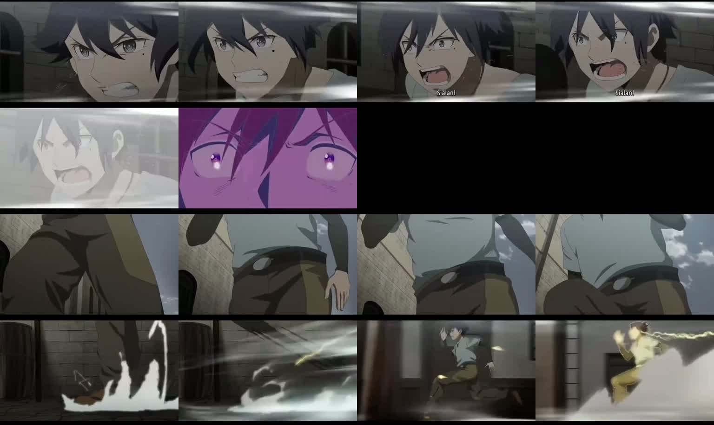

01 / Замысел
Поздравление превращается в приключение
Всё началось с девятилетия и подарка — серого двухколёсного самоката. Мне хотелось, чтобы он стал наградой в конце приключения. В первоначальном «Острове девяти сокровищ» сокровища соответствовали качествам и пожеланиям: смелости, любознательности, смекалке, скорости, ловкости, настойчивости, верным друзьям, удаче и большой мечте. В процессе я сократил маршрут до четырёх испытаний. Название сохранило связь с девятилетием.
Пиратскую атмосферу и шутливо-серьёзное досье подсказал «Остров сокровищ». Досье я сделал рисованным, а остальные сцены — с фотореалистичным персонажем по фотографическим референсам. Для досье предоставил голосовую запись, звук часов и добавил море. Когда надписи в ранней анимации начали появляться и исчезать, часть изображения пришлось удержать неподвижной. Штамп о приёме в команду должен был действительно опуститься поверх страницы с ударом.

Первые пробы показали разницу между описанием и сценой. Движения было мало, испытания читались плохо, сундук постоянно менялся. Я стал разбирать эпизоды на планы: показать проблему, реакцию, физическое действие и его результат. Проверка каждого этапа помогала больше, чем очередное удлинение промпта.
02 / Весь сюжет
От пиратского досье до падающей звезды
Дальше — весь сюжет, включая подарок и финал.
Корабль, папка и карта
Парусник подходит к острову с бухтой. В каюте пират кладёт на стол папку с личным делом. Досье представляет девятилетнего искателя приключений, штамп принимает его в команду. На палубе уже фотореалистичный персонаж получает карту и задание пройти четыре испытания. Лодка доставляет его к берегу; он проверяет маршрут и идёт в джунгли.

Первое испытание: смелость
Впереди длинный подвесной мост над глубокой долиной. Он шатается, камера облетает его и показывает высоту, одна из досок трескается. Персонаж в последний момент добирается до другого берега. Только после приземления появляется ачивка «Смелость».

Второе испытание: любознательность
Тропа упирается в лианы. Камера показывает тупик от лица персонажа до того, как он входит в кадр. Он осматривается, чешет голову и замечает мигающую ракушку на знаке: «О!» Подходит и физически поворачивает доску. В тот же момент заросли расходятся, открывая путь. Персонаж уходит с картой в проход и получает ачивку за любознательность.

Третье испытание: смекалка
За проходом каменная площадка: каналы, вода, два круглых поворотных диска, колесо и закрытая дверь. Я построил головоломку по принципу игры «сантехник». Персонаж кладёт карту и неверно поворачивает диск. Попытка решить всё силой тоже не помогает: пока он крутит колесо руками, дверь открыта, но стоит отпустить его и вытереть пот — снова закрывается.
Нужно соединить маршрут воды. После правильного поворота первого диска поток доходит до второго препятствия. После второго — достигает колеса и вращает его, удерживая дверь открытой. Теперь персонаж может оставить механизм и пройти дальше. Третья ачивка — за смекалку.

Четвёртое испытание: скорость
Колокольчик запускает большие песочные часы и открывает дальнюю калитку. Персонаж засматривается на песок, пока время уже идёт. Затем убирает карту и срывается с места. Монтаж чередует бег, убывающий песок и закрывающийся проход. Он успевает, переводит дыхание и получает четвёртую ачивку. Печатей на карте собирать не нужно — остаётся добраться до отмеченного сокровища.

Сундук и необычное судно
Над бухтой персонаж находит сундук, убирает карту: «Вот ты где!» Сам поднимает крышку. Внутри сложенный серый самокат и шлем. Диктор объявляет новейшее достижение кораблестроения, а рядом с сундуком с криком просыпается попугай и произносит заученную пиратскую шутку.
«Два колеса, один руль, ни одной пушки. Зато какая скорость!»

Ночной спуск и поздравление
Я убрал дополнительные замки, печати и предложенный свиток с отправкой в порт. Вместо этого захотел выход после находки в духе Tomb Raider: наклонный трос прямо на пляж. Самокат помещается в чехол. В окончательной постановке персонаж держится обеими руками за рукоять подвесного бегунка — вместо рассмотренного раньше варианта с ледорубами.
День сменяется ночью. Диктор поручает новому капитану открывать маршруты и не забывать о шлеме, персонаж спускается к бухте. Из последнего монтажа я убрал отдельный клип первой поездки, поэтому спуск переходит в финальное поздравление. На пляже персонаж уже со шлемом и самокатом смотрит на загорающиеся звёзды. Падающая звезда сопровождает заключительное пожелание с днём рождения.

03 / Выбор моделей
Быстрая первая проба и гораздо лучшая картинка
Первая видеопроба была на Wan 2.2. Она создала результат быстро, но качество этой более старой модели для моей задачи оказалось ужасным. Звук можно было использовать, картинку и действия — нет. Переход к MiniMax H3 через FreeVideo сильно изменил впечатление, особенно на крупных планах с мелкими деталями. За качество пришлось заплатить ожиданием, и хорошие опорные кадры всё равно оставались необходимы.
| Задача | Инструмент | Роль |
|---|---|---|
| Опорные кадры | Qwen Image 2.1 | Основной инструмент связанных состояний сцен. |
| Часть кадров головоломки | GPT Image | Альтернативные состояния и исправления третьего испытания. |
| Разборчивая речь | Drama 3 | Постоянные голоса, реплики, паузы и выразительность. |
| Видео | MiniMax H3 / FreeVideo | Движение, работа камеры и звуковое окружение. |
| Управление и монтаж | Codex, ComfyUI MCP, FFmpeg | Схемы, входы, записи запусков, сведение и сборка. |
MiniMax H3 — модель, FreeVideo — локальный инструмент, через который я её запускал. Его документация описывает VDN-H3 от OpenVDN и Video DeltaNet. В проекте я вызывал FreeVideo через CLI, а Qwen и Drama работали в локальных workflow ComfyUI через MCP.
Codex и ComfyUI MCP избавили от большой части ручной настройки. Агент находил установленные модели, разбирался с запуском, готовил схемы, подключал ноды и сохранял результаты. Постановка и отбор оставались за мной. Самыми полезными часто были конкретные замечания: река не движется, верёвка идёт не туда, персонаж вообще не коснулся знака.
04 / Память и время
16 ГБ видеопамяти и около 52 ГБ оперативной
Я работал на RTX 5070 Ti с 16 ГБ VRAM. Это память видеокарты, отдельная от оперативной памяти компьютера. При одном из запусков генерации речи занятая RAM доходила примерно до 52 ГБ. Это наблюдения моей системы, а не универсальные требования моделей.
Запуск стал возможен благодаря работам других разработчиков. FreeVideo размещает веса между VRAM, RAM и диском, использует потоковую подгрузку, предварительную загрузку и вычисления частями. У меня применялся подготовленный int8 ConvRot cache. Qwen и его текстовый энкодер тоже работали с int8 ConvRot-весами, а установленный вариант Drama назывался w4a8experts_bf16. Готовые движки, сжатые веса и интеграции ComfyUI были важной частью конвейера.
За результатом стояли разработчики моделей, OpenVDN и Video DeltaNet, FreeVideo от FlashML-org, ComfyUI, интеграция Drama от PedroMarinhoDev и MCP-инструменты. Агент помогал соединить эти части. Сами оптимизации памяти он не изобретал.
Перед тяжёлым видео приходилось выгружать простаивающие модели ComfyUI. Оставленная в памяти озвучка или генерация изображений могла отнять ресурсы у следующего этапа. Другая ловушка — перепутать portable Python ComfyUI со служебной средой MCP. Установка пакетов по одному в неверный интерпретатор не решала проблему запуска; рабочую последовательность я зафиксировал в документации.
Речь генерировалась сравнительно быстро даже на CPU. Видео в рабочем режиме занимало около полутора минут на секунду результата при 24 кадрах/с. Базовые настройки: 1344 × 768, один проход, 16 шагов. Десятисекундная проба могла означать пятнадцать минут ожидания. Неверный опорный кадр стоил дорого, поэтому проверка связанных изображений до запуска видео действительно окупалась. Это практическая оценка, а не замер общего времени производства.
05 / Движение и ограничения
Мелкие движения, которые делают сцену живой
Две важные смены камеры
Второй клип испытания с мостом — облёт персонажа и моста. Камера раскрывает глубину долины, и смелость становится видимой. В ранних вариантах мост висел едва над землёй, верёвки крепились неправдоподобно или вся конструкция выглядела слишком надёжной. Движение камеры помогло после того, как само место стало убедительно опасным.
Второй клип испытания на любознательность решает другую задачу: смена ракурса показывает тупик от лица персонажа. Пустой заблокированный проход виден до его входа, поэтому зритель успевает понять проблему. Это работает лучше, чем сразу показать кого-то, стоящего возле знака.
Волосы на ветру
В четвёртой сцене, когда персонаж получает карту на палубе, у него двигаются волосы от ветра. Совсем мелкая деталь, а я сразу её заметил. Вместе с морем за кораблём движение помогает поверить в настоящую продуваемую палубу, а не в портрет на подставленном фоне.
Вода удивила, исходные картинки помогали не всегда
Третье испытание было самым требовательным. Вода должна течь, упираться в неверно повёрнутый канал, после одного движения доходить до следующей преграды, а в конце вращать колесо. В удачных кадрах MiniMax меня удивило, насколько убедительно выглядела её физика. Это моё впечатление от движения, а не утверждение, что модель запускает симуляцию жидкости.
При этом из-за опорных картинок GPT Image качество видео в этом испытании заметно просело. В моих попытках разрушались лицо персонажа и мелкие детали. Я пробовал добавлять референс персонажа на этапе видео, потом пробовал без него. Более сильная видеомодель не могла просто вернуть детализацию и последовательность, потерянные во входных изображениях. Основным инструментом опорных кадров остался Qwen.
Квадратные элементы я заменил круглыми дисками, чтобы был понятен поворот. Между состояниями источник, каналы, колесо и дверь должны оставаться на месте. В промпте приходилось уточнять и неподвижные объекты: колесо не должно начинать вращаться только от того, что где-то в кадре есть вода.
Забрать вещи из сундука
Мне понравилось, как MiniMax показал сбор подарка. Руки, крышка, одежда, самокат и шлем должны взаимодействовать в одной сцене. Сначала я заменил неубедительный кадр, где сундук будто открылся сам: теперь персонаж держит крышку. Позже он действительно забирает вещи. Паузу после сборов всё равно пришлось сократить — за хорошим действием вполне может идти плохое зависание.

Попугай — одна из удач
Попугай получился особенно хорошо. Для него я сделал отдельную видеовставку: клюв пытается двигаться в такт человеческой пиратской реплике. Разборчивую речь дала Drama 3, видео — исполнение. Возникает ощущение птицы, повторяющей заученную фразу, без необходимости считать каждую фонему идеально синхронной.

Песочные часы вышли хуже
Слабее оказалась деталь четвёртого испытания — песочные часы. Песок и механизм выглядели менее убедительно, чем вода в третьем. Скорость, ракурсы и попугай понравились мне гораздо больше этого реквизита. Такой недостаток тоже стоит оставить в рассказе: модель впечатляет волосами на ветру или водой в одной сцене, а в следующей не справляется с вроде бы простым предметом.
Поставить скорость по референсу
Для четвёртого испытания мне хотелось большего, чем просто пробежка к воротам. Я принёс аниме-референс с выразительными разворотами камеры, размытием фона и искрами из-под ног. Попросил, чтобы камера обходила персонажа сзади на бок и показывала профильный бег, а в начале были крупный план и штрихи скорости из референса. На контактном листе ниже виден ритм, который я хотел перенести.

Первую попытку прервали, пока я уточнял постановку. Затем прямая подача всего ролика как видеогайда скопировала слишком многое: результат перенёс аниме-стиль и чужого персонажа. В удачном варианте остались только изображения моего персонажа и коридора. Весь референс разобрали на текстовую постановку: удивлённое лицо со штрихами сверху и снизу, задний трекинг, обход на бок, размытые стены и золотые искры у обуви. Штрихи и искры создала сама FreeVideo внутри кадра.
Отдельная переделка была со звуком. Сначала я попросил Drama 3 «Стой!», затем заменил на «Бежи!». Картинка подошла, но в конце FreeVideo добавила бессмысленные голоса. Полное отключение дорожки убрало и музыку, которую я хотел оставить. В принятой v5 на CPU разделили звук через Demucs: убрали вокальную составляющую, сохранили инструментальный фон и подмешали реплику Drama 3. Принятое изображение использовали без новой видеогенерации.
Эта вставка заменила прежний статичный спринт, а не добавила второй забег. Следующий общий план у ворот — прямой монтажный стык, а не одно непрерывное движение камеры. Энергия этого фрагмента понравилась мне гораздо больше, чем песочные часы в том же испытании.

06 / Голоса и звук
Исполнение из нескольких попыток
Для последовательности я держал общие голосовые референсы, а конкретные реплики сохранял рядом с видео своей сцены. Досье использовало предоставленную мной запись. У диктора, коротких реплик персонажа и попугая были свои закреплённые референсы. Теги выразительности Drama 3, паузы и подсказки произношения заметно влияли на результат.
Попугаю хотелось раскатистого «р», паузы после пушек и азартного финала. В одной пробе был прекрасный невнятный начальный крик, другая оборвалась. Я объединил первые две секунды раннего крика с более поздней речью, удалив её первые полсекунды. Случайность стала актёрской деталью: открывается сундук, птица просыпается с криком и выдаёт заученную речь. Итоговая вставка длилась 11,16 секунды.
FreeVideo давал полезные море, листву, птиц и иногда музыку вместе с изображением. Разборчивую речь я делал Drama 3. В сцене скорости видеомодель добавила бессмысленные голоса, и звук пришлось дополнительно править. Точные трески, удары и механизмы можно было добавлять отдельными эффектами.
Не весь звук генерировался. В ранних сценах использовалась Adventures in Adventureland Кевина Маклауда, а море — Joseph Sardin / BigSoundBank. Сведения об источниках и лицензиях я сохранил в проекте; атрибуция есть и в конце статьи.
07 / Конвейер
Структура папок стала памятью фильма
Когда пробы начали накапливаться, я организовал проект вокруг сцен и клипов. У каждой сцены появились собственные картинки, исходные видео, реплики, эффекты, workflow и монтаж. Общие лица, костюм, голоса и музыка лежали отдельно. Так агент возвращался к тому же персонажу и реквизиту вместо того, чтобы изобретать их заново.
Сюжет → связанные кадры → просмотр → речь и видео → монтаж → просмотр
Рядом с заданием оставались промпт, media.json, входные изображения, seed и параметры. В README сцены записывались результаты, замечания, версии, одобрения и задачи. Главный индекс отслеживал всю историю. Завершённый рендер отличался от принятого мной результата; прерванная попытка не становилась готовым клипом.
scenes/
README.md сюжет и статусы
NN-scene-name/
README.md решения и журнал сцены
frames/ связанные кадры
video/raw/ исходные генерации
video/drafts/rejected/ отклонённые пробы
audio/voice/ реплики
audio/sfx/ точные эффекты
workflows/ prompts, inputs, seeds, settings
output/ текущая полная сцена
clips/ копии принятых клипов
work/archive/ прошлые сборки
shared/ общие лица, голоса, музыка
output/assemblies/ общие сборки фильмаОригиналы оставались в video/raw, копии принятых клипов — в output/clips, а в корне output — одна актуальная полная сцена. Прежние монтажи уходили в work/archive. Для некоторых переходов использовали реальный последний кадр предыдущего клипа, в том числе при уходе от сундука к ночному обрыву.
Один шаблон ачивки на четыре испытания
Инфографика приятно удивила. Я сделал общий SVG-шаблон с медальоном, рамкой, цветами и шрифтом, затем менял название и номер испытания. Плашки добавлялись при монтаже: можно было править текст, угол экрана и момент появления без новой видеогенерации.

Сначала ачивка за смелость выскакивала до завершения моста. Её перенесли на приземление, примерно на 1:10 фильма. Разделение слоёв также позволило изменить количество испытаний на четыре, сохранив одинаковое оформление.
08 / Последние правки
Исправить фильм без новой генерации
Одинаковый опорный кадр в конце одного клипа и начале другого сохранял композицию, но иногда создавал заметную остановку. Я подрезал повторяющиеся позы и сдвигал вместе с монтажом реплики и ачивки. Фразу о неудачной попытке тоже перенёс после того, как действительно произошёл ошибочный поворот.
| Проблема | Правка |
|---|---|
| Ачивка моста слишком рано | Перенос на приземление, 1:10. |
| Зависания на стыках | Срез повторяющихся поз во втором и третьем испытаниях. |
| Долгая остановка у колеса | В v3 убраны ещё 2,5 секунды. |
| Попугай слишком сильно обрезан | Возвращены пролёт и реакция: +1,75 секунды. |
| Ожидание после сборов | Убраны 2,25 секунды перед уходом. |
| Лишняя первая поездка | Клип исключён перед поздравлением. |
Сборка v2 длилась 253,208 секунды, v3 — 250,250. Несколько секунд важны, когда персонаж будто ждёт начала следующего клипа. Исходные материалы я сохранил; в монтажных записях есть проверки SHA-256. Общие параметры фильма: 1344 × 768, 24 кадра/с, стереозвук 48 кГц.
Полезным результатом стал повторяемый процесс: поставить действие, проверить связанные кадры, сгенерировать управляемые планы и поправить темп по сохранённым материалам. Последним исправлениям потребовался новый монтаж, а не очередной долгий видеорендер.
09 / Фильм
Четыре минуты локального кино
Здесь сборка v3, о которой идёт речь. Фильм сохраняет исходную русскую речь и надписи; переключатель языков переводит статью.
Рабочая сборка v3 · 4:10,250 · русская речь · Открыть видео ↗
Все 12 сцен и их начало
- Корабль и остров
- Каюта и папка
- Рисованное досье и штамп
- Получение карты
- Высадка
- Смелость: мост
- Любознательность: ракушка
- Смекалка: вода
- Скорость: калитка
- Сундук и подарок
- Ночной зиплайн
- Поздравление под звёздами
О материалах
Я восстановил этот рассказ по рабочим чатам, журналам сцен, workflow и таймлайну v3. Иллюстрации извлечены из сборки без ретуши; подписи обозначают время кадра, а не начало сцены. Сравнение моделей, движение воды, деградация картинок, скорость и RAM — наблюдения моих попыток, а не контролируемые бенчмарки.
Источники и авторство
Музыка: Kevin MacLeod — Adventures in Adventureland, CC BY 4.0, смонтирована и сведена с репликами и эффектами. Море: Joseph Sardin / BigSoundBank, CC0. Инструменты и модели сохраняют лицензии своих разработчиков.